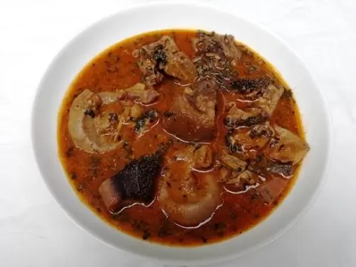

Ogbono soup Recipes

Ingredients:
- Assorted meat 1.5kg
- 2 cups of ogbono seeds
- Stockfish head (medium size)
- 1 medium-size dry catfish
- 1 cup of crayfish (ground)
- Fluted pumpkin (a bunch)
- 1 teaspoon of ogiri or ground dawadawa or okpei (local ingredients) (optional)
- 250ml of palm oil
- Salt and pepper to taste
- Water
- Salt
Serving: 6-8 people
Steps:
- Wash and season the assorted meat with salt and pepper. Boil until tender.
- Soak the stockfish and dry catfish in warm water for about 10 minutes, then wash and set aside.
- Grind the ogbono seeds into a fine powder using a blender or mortar and pestle.
- In a large pot, heat the palm oil over medium heat. Add the ground ogbono and stir continuously for about 5 minutes until it thickens.
- Add the boiled meat, stockfish, and dry catfish to the pot. Stir well to combine.
- Add water gradually to achieve your desired soup consistency. Bring to a boil.
- Add the ground crayfish and optional ogiri/dawadawa/okpei. Stir well.
- Wash and chop the fluted pumpkin leaves, then add them to the soup. Cook for an additional 5-10 minutes until the leaves are tender.
- Adjust seasoning with salt and pepper as needed. Serve hot with your choice of swallow (fufu, pounded yam, etc.).
Back to Home